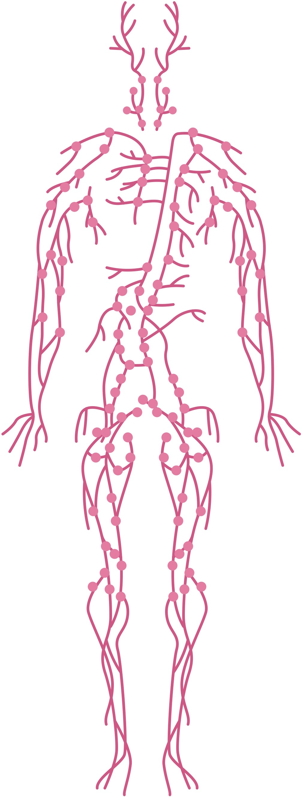

Despre sistemul excretor
Sistemul excretor uman este ansamblul de organe (rinichi, uretere, vezică urinară, uretra) responsabil cu eliminarea produșilor finali de metabolism și a substanțelor toxice din sânge, menținând astfel homeostazia (echilibrul mediului intern). Acesta reglează cantitatea de apă și săruri din corp prin formarea și eliminarea urinei.
Principalul produs eliminat este urina.

Componentele principale ale aparatului urinar (sistemul excretor în sens restrâns):
- Rinichii: – Organe pereche, situate în cavitatea abdominală, care filtrează sângele și formează urina.
- Ureterele – Tuburi care transportă urina de la rinichi la vezica urinară.
- Vezica urinară – Organ muscular ce stochează urina.
- Uretra – Conduct prin care urina este eliminată din corp.

Rinichii
Funcțiile principale ale rinichilor:
- Filtrarea sângelui: – Rinichii curăță permanent sângele de deșeuri metabolice (precum ureea și creatinina) și toxine, eliminându-le prin urină.
- Echilibrul hidro-electrolitic: –Reglează cantitatea de apă și nivelul de săruri și minerale (sodiu, potasiu, calciu) din corp.
- Controlul tensiunii arteriale: – Produc hormoni care ajută la reglarea presiunii sângelui.
- Producția de hormoni: – Secretă eritropoietină (stimulează formarea globulelor roșii) și transformă vitamina D în forma sa activă pentru sănătatea oaselor.
Rinichii sunt organe vitale, cu o formă asemănătoare boabelor de fasole, situate în partea posterioară a abdomenului, de o parte și de alta a coloanei vertebrale. Aceștia funcționează ca un sistem de filtrare ultra-eficient, esențial pentru menținerea echilibrului intern al organismului.
Structura rinichiului:
- Zona corticală – conține glomeruli și vase de sânge
- Zona medulară – formată din piramide renale
Rinichii filtrează sângele și elimină toxinele sub formă de urină.

Nefronul
Nefronul este „unitatea funcțională” a rinichiului, adică acea structură microscopică unde se întâmplă de fapt toată magia filtrării. Fiecare rinichi conține aproximativ 1 milion de nefroni, care lucrează neîncetat pentru a curăța sângele.
Structura unui nefron
- Glomerulul: – O rețea de capilare foarte fine prin care sângele trece sub presiune.
- Capsula Bowman: –O structură în formă de cupă care colectează lichidul filtrat din glomerul (numit urină primară).
- Tubul renal (Sistemul de procesare): – Un canal lung și răsucit unde lichidul filtrat este transformat în urină finală. Acesta are mai multe segmente (tub contort proximal, ansa Henle, tub contort distal).
Procesul de formare a urinei
- Ultrafiltrarea: – Sângele sub presiune „împinge” apa și substanțele mici (glucoză, săruri, uree) prin pereții glomerulului în capsula Bowman. Celulele de sânge și proteinele mari rămân în urmă, deoarece sunt prea mari pentru a trece prin filtru.
- Reabsorbția: – Pe măsură ce urina primară circulă prin tubul renal, corpul își recuperează substanțele utile (multă apă, toată glucoza, vitaminele și o parte din săruri), trimițându-le înapoi în sânge.
- Secreția: – Substanțele nocive rămase sau în exces (cum este potasiul sau anumite medicamente) sunt eliminate activ din sânge direct în tubul renal.
La nivelul nefronului are loc filtrarea sângelui și formarea urinei.

Căile urinare
Căile urinare transportă și elimină urina din organism.
Căile urinare intrarenale
Sunt situate chiar în interiorul rinichiului și au rolul de a colecta urina finală de la toți nefronii:
- Calicele mici și mari: – Cupole mici care primesc urina din tuburile colectoare.
- Pelvisul renal (Bazinetul): – O cavitate mai mare, în formă de pâlnie, unde se adună toată urina înainte de a părăsi rinichiul.
Căile urinare extrarenale (Excretorii)
Acestea sunt organele care duc urina spre exterior:
- Ureterele: – Sunt două tuburi subțiri și musculare (aproximativ 25-30 cm lungime) care fac legătura între rinichi și vezica urinară. Ele transportă urina prin mișcări active (peristaltice), nu doar prin gravitație.
- Vezica urinară: – Este un organ cavitar, ca un „sac” muscular elastic, situat în partea inferioară a abdomenului. Rolul ei este de a depozita urina (poate reține în medie 300-500 ml) până când simțim nevoia de a urina.
- Uretra: – Canalul final prin care urina este eliminată din vezică în exterior.
- La femei: Este scurtă (3-4 cm), ceea ce explică de ce infecțiile urinare sunt mai frecvente (bacteriile ajung mai ușor la vezică).
- La bărbați: Este mult mai lungă (aproximativ 20 cm) și servește și la eliminarea spermei.

Bolile sistemului excretor
afectează eliminarea deșeurilor metabolice și pot include infecții, inflamații sau formarea de calculi (pietre). Cele mai comune afecțiuni sunt cistita, pielonefrita, litiaza urinară (calculi renali) și insuficiența renală, care pot apărea din cauza alimentației neechilibrate, a infecțiilor bacteriene sau a altor factori.
- Litiaza urinară (calculoza renală):
– Formarea de calculi (sedimente de acid uric, săruri de fosfat, carbonat) în rinichi (parenchim, calice sau pelvis).
- Cistita – Inflamația vezicii urinare, de obicei cauzată de o infecție bacteriană.
- Pielonefrita – Infecție a rinichiului, adesea o complicație a unei infecții urinare inferioare.
- Glomerulonefrita: – Afecțiune inflamatorie a glomerulilor renali, care afectează capacitatea de filtrare a rinichilor.
- Insuficiența renală: – Incapacitatea rinichilor de a filtra deșeurile din sânge, putând fi acută sau cronică.
Pentru a menține rinichii sănătoși, este important să bem apă suficientă și să avem un stil de viață echilibrat.